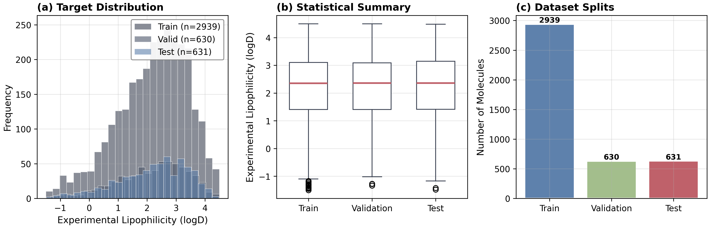
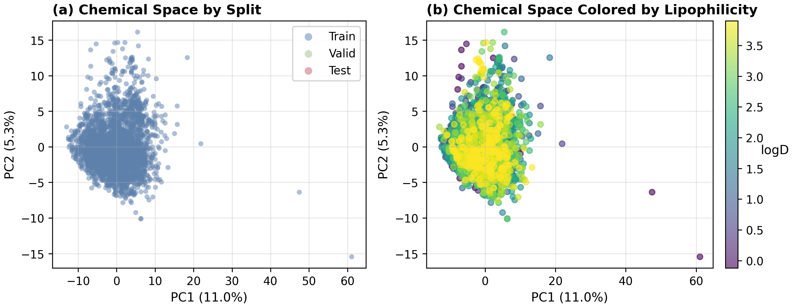
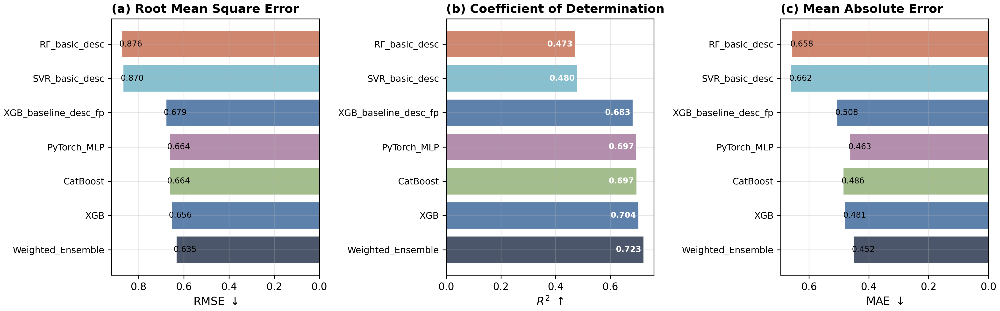
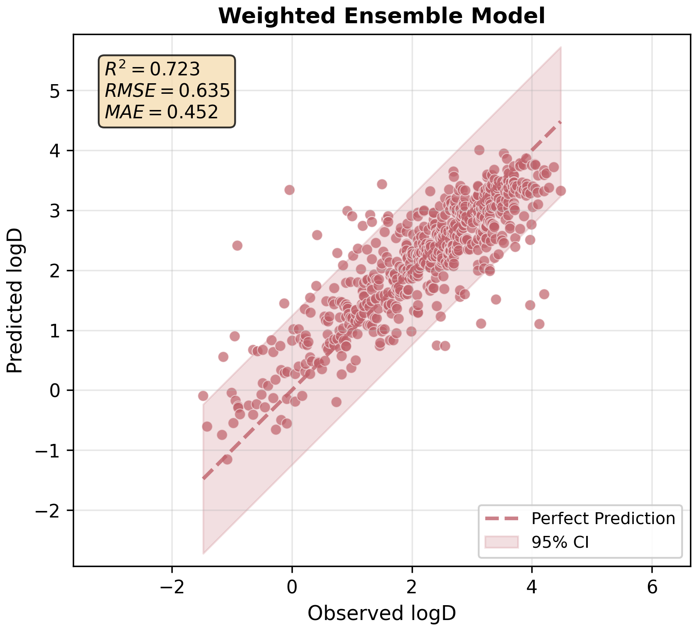
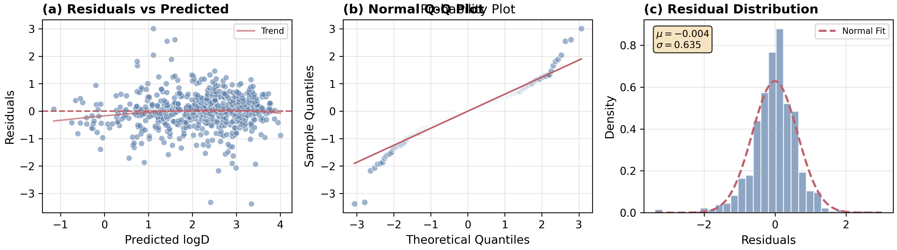
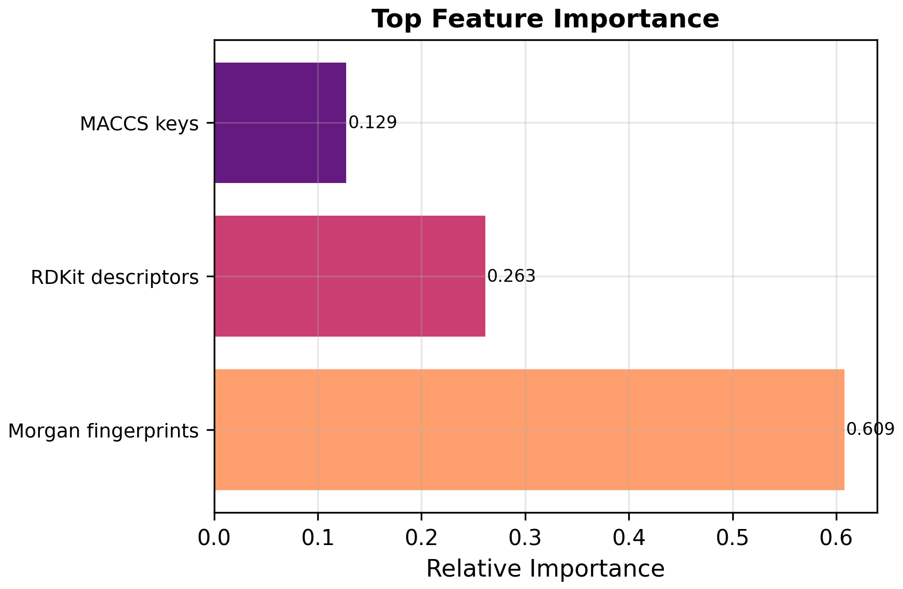
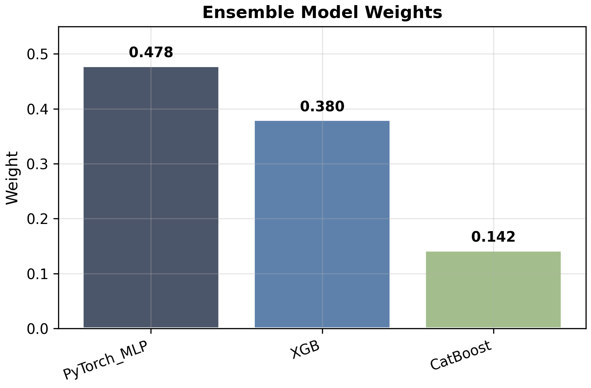
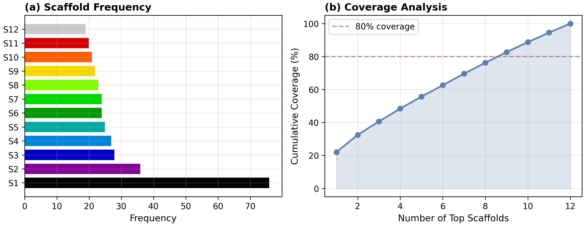

脂溶性（lipophilicity）是药物研发中的关键理化性质，对膜通透性、口服生物利用度和组织分布有重要影响。 本研究使用MoleculeNet Lipophilicity数据集（4,200个药物分子），开发了一个基于集成机器学习的定量构效关系（QSPR）模型。 通过整合RDKit描述符、Morgan指纹和MACCS keys，结合XGBoost、CatBoost和PyTorch MLP的加权集成， 我们的最佳模型在独立测试集上取得了R²=0.723、RMSE=0.635、MAE=0.452的性能。 与基线模型相比有显著提升，为药物研发中的脂溶性预测提供了有效工具。
关键词：脂溶性预测、QSPR、机器学习、集成方法、分子指纹
| 模型 | R² ↑ | RMSE ↓ | MAE ↓ |
|---|---|---|---|
| Weighted Ensemble | 0.723 | 0.635 | 0.452 |
| XGBoost (增强) | 0.704 | 0.656 | 0.481 |
| CatBoost (增强) | 0.697 | 0.664 | 0.486 |
| PyTorch MLP (增强) | 0.697 | 0.664 | 0.463 |
| XGBoost (基线) | 0.684 | 0.679 | 0.508 |
| SVR (基线) | 0.480 | 0.870 | 0.662 |
| Random Forest (基线) | 0.473 | 0.876 | 0.658 |
注：↑表示越高越好，↓表示越低越好








完整参考文献列表请参见 report/academic_report.md
report/academic_report.md (推荐使用)report/qasar_report.texreport/references.bibresults/professional/metrics_summary.csvresults/statistics/statistical_report.mdRESULTS_SUMMARY.txt1. 查看 Markdown 格式完整报告（推荐）:
打开 report/academic_report.md
2. 查看快速摘要:
cat RESULTS_SUMMARY.txt
3. 重新运行实验:
python run_professional.py